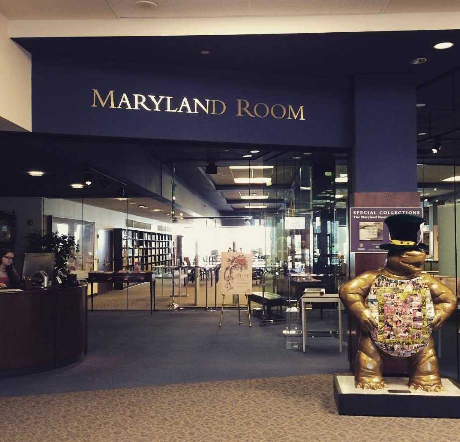

Plats: Maryland Room (Special Collections)
Typ: Universitetsbibliotek - läsrum för arkivmaterial

UMD:s Hornbake Library huserar universitetets Special Collections - arkiv, manuskript, och historiska dokument. Maryland Room är ett tyst läsrum där forskare kan begära fram material.
Varför Sparky valde detta:
Alias-matchning: "V. Petrov"
Transaktion: Köp från dödsbo
Föremål: Personlig dagbok (1940)
Dödsbo: Harriet Johnson
Datum loggat: Oktober 2024
Källa: Lovettsville Historical Society Q1 2025 donor report
Sam "Trench" Novak var inte närvarande denna session.
Kort introduktionssession. Chesapeake Cell möttes för första gången på Hornbake Library. Karaktärerna fick lära känna varandra. Scalpel (Hanna) introducerades. Under mötet fick Sparky en notis från sin AI om Volkov-aktivitet kopplat till ett dödsbo i Lovettsville.
Kort intro-session som planerat. Gruppen fick träffas och etablera dynamik. Volkov-kroken är satt.
Session 2 fortsätter i biblioteket. Gruppen behöver börja förstå kopplingarna - vad betyder Volkovs intresse för en dagbok från 1940? Vem var Harriet Johnson?